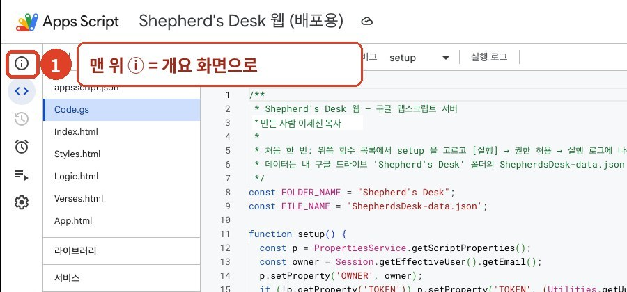
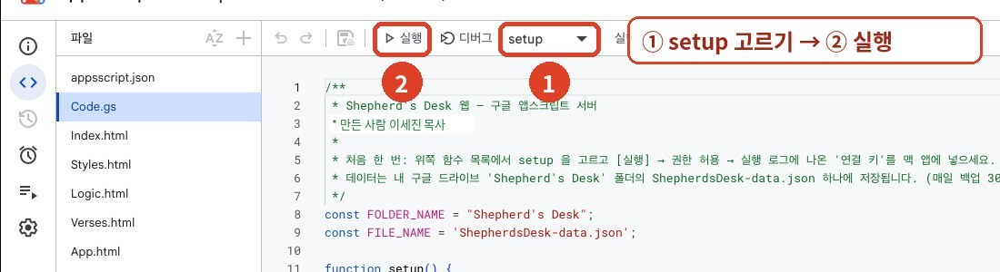

맥 앱 설치
맥 앱은 M1 이후의 애플 실리콘 맥(macOS 12 Monterey 이상)에서 돌아갑니다. 내 맥이 어떤지 모르시면 화면 왼쪽 위 애플 메뉴() → 이 Mac에 관하여에서 ‘칩’이 Apple M으로 시작하는지 보세요. 인텔 맥이면 웹 버전을 쓰시면 됩니다.
- 맥용 렉시오 내려받기 (DMG)
- 내려받은 Lexio-AppleSilicon.dmg를 더블클릭하면 창이 하나 열립니다.
- 창 안의 Lexio.app을 옆의 Applications(응용 프로그램) 폴더 위로 끌어다 놓습니다. 다 복사되면 창을 닫고, Finder 왼쪽의 LEXIO 옆 ⏏ 단추로 꺼내 주세요.
- 아래 처음 열기를 한 번 해 주세요.
처음 한 번 열기
렉시오는 개인이 만든 무료 앱이라 애플의 유료 인증을 받지 않았습니다. 그래서 처음 열 때 맥이 확인을 요구합니다. 한 번만 하면 됩니다.
방법 1 — 터미널에 한 줄 붙여 넣기 (가장 확실)
- 응용 프로그램 → 유틸리티 → 터미널을 엽니다. (또는 ⌘+스페이스 → “터미널” 입력)
- 아래 줄을 복사해 붙여 넣고 return을 누릅니다.
xattr -cr /Applications/Lexio.app && codesign --force --deep --sign - /Applications/Lexio.app“replacing existing signature” 같은 문구가 나오면 정상입니다. 이제 응용 프로그램에서 렉시오를 열면 됩니다. Dock에 고정해 두시면 편합니다.
방법 2 — 시스템 설정에서 허용
- 렉시오를 한 번 열어 봅니다. “확인되지 않은 개발자” 창이 뜨면 완료(또는 취소)를 누릅니다.
- 시스템 설정 → 개인정보 보호 및 보안을 열고 아래로 내리면 “Lexio이(가) 차단되었습니다” 옆에 그래도 열기가 있습니다. 누르고 암호를 넣습니다.
“손상되었기 때문에 열 수 없습니다”가 나올 때
앱이 실제로 망가진 것이 아니라, 인증되지 않은 앱에 맥이 붙이는 경고입니다. 휴지통으로 옮기지 마세요. 먼저 Lexio.app이 응용 프로그램 폴더에 있는지 확인한 뒤, 아래 두 단계를 차례로 해 보세요.
1단계 — 위의 한 줄 명령
방법 1의 명령을 실행합니다. 대부분은 여기서 열립니다.
2단계 — 그래도 안 되면, 관리자 권한으로
터미널에 아래 두 줄을 한 줄씩 붙여 넣고 return을 누릅니다. 맥 로그인 암호를 물으면 입력하고 return — 입력하는 동안 글자가 보이지 않는 것이 정상입니다.
sudo xattr -cr /Applications/Lexio.appsudo codesign --force --deep --sign - /Applications/Lexio.app“replacing existing signature”가 나오면 끝입니다. 렉시오를 다시 열어 보세요. 그래도 안 되면 시스템 설정 → 개인정보 보호 및 보안에서 그래도 열기를 누릅니다.
웹 버전 설치 (구글 계정)
웹 버전은 목사님의 구글 계정 안에서 돌아갑니다. 렉시오 프로젝트의 사본을 내 계정에 만들고, 나만 여는 웹 주소로 배포하면 됩니다. 컴퓨터에서 한 번만 하시면 되고, 10분쯤 걸립니다.
1단계 — 사본 만들기
- 컴퓨터 브라우저에서 구글 계정에 로그인한 뒤, 아래 단추를 누릅니다. 새 탭에 코드가 보이는 편집기 화면이 열립니다. 읽기 전용이라 고칠 수 없는 것이 정상입니다.
- 화면 왼쪽 끝 세로 아이콘 줄의 맨 위 ⓘ(개요)를 누릅니다.

같은 방식으로 배포하는 Shepherd's Desk 화면입니다. 렉시오도 단추 위치가 같습니다. - 개요 화면 오른쪽 위의 겹친 종이 모양 아이콘(사본 만들기)을 누릅니다. “…의 사본”이 새 탭에 열리고 내 드라이브에 저장됩니다. 이제부터는 이 사본에서 합니다.
- 위쪽 이름을 눌러 렉시오로 바꿉니다. (선택)
2단계 — 처음 실행 (권한 허용)
- 왼쪽 <> 편집기에서
Code.gs를 엽니다. 위쪽 함수 목록에서 setup을 고르고 ▷ 실행을 누릅니다.
① setup을 고르고 ② 실행을 누릅니다. - “승인 필요” 창이 뜨면 권한 검토 → 내 구글 계정을 고릅니다.
- “Google에서 확인하지 않은 앱” 경고가 나오면 왼쪽 아래 고급 → 렉시오(으)로 이동(안전하지 않음) → 계속/허용을 누릅니다. 방금 내가 만든 사본을 내 계정이 처음 실행할 때 나오는 경고입니다.
- 아래 실행 로그에 “준비 완료”가 나오면 성공입니다. 내 드라이브에 렉시오 폴더가 생깁니다.
3단계 — 나만 여는 웹 주소 만들기 (배포)
- 오른쪽 위 배포 → 새 배포를 누릅니다.
- “유형 선택” 옆 톱니바퀴 ⚙ → 웹 앱을 고릅니다.
- 다음 사용자 인증 정보로 실행: 나, 액세스 권한이 있는 사용자: 나만으로 두고 배포를 누릅니다.
- 나오는 웹 앱 URL(
/exec로 끝나는 주소)을 복사해 두고, 브라우저에서 열어 렉시오가 나오면 성공입니다. 즐겨찾기에 넣어 두세요.
새 버전으로 바꾸기 (웹)
새 버전이 나오면 웹 버전 화면 위쪽에 알림이 뜹니다. 원고와 성경 자료는 드라이브와 기기에 그대로 남습니다.
- 위 1단계처럼 새 사본 링크에서 새 사본을 만들고, 2단계의 setup을 실행합니다.
- 새 사본에서 3단계로 배포하고, 새 웹 주소를 즐겨찾기·홈 화면에 다시 넣습니다.
- 예전 사본은 지워도 됩니다. 원고는 프로젝트가 아니라 드라이브 ‘렉시오’ 폴더에 있어서 새 사본이 그대로 읽습니다.
설치 없이 둘러보기
먼저 화면만 보고 싶으시면 둘러보기 버전을 여세요. 이 버전은 원고가 그 브라우저에만 저장되고 드라이브와 이어지지 않습니다.
아이패드 · 휴대폰에서 쓰기
- 컴퓨터에서 만든 웹 앱 주소(/exec)를 메일이나 메모로 보내고, 아이패드 사파리로 엽니다. 같은 구글 계정으로 로그인되어 있어야 합니다.
- 주소창 옆 공유(□↑) → 홈 화면에 추가를 누릅니다. 렉시오 아이콘이 생깁니다.
- 컴퓨터에서 넣은 성경 자료와 원고, 글자 크기 같은 설정이 그대로 이어집니다. 따로 할 일이 없습니다.
세로 화면에서는 위쪽의 성경 | 설교 단추로 두 화면을 오갑니다.
성경 자료 (처음 설정)
따로 넣지 않아도 됩니다. 렉시오에는 공개 성경 8가지(개역한글 · KJV · BSB · ASV · YLT · Darby · 히브리어 WLC · 헬라어 TR)가 처음부터 들어 있습니다. 열자마자 개역한글 본문이 나옵니다.
가지고 계신 다른 번역·주석 넣기
- 렉시오 오른쪽 위 ⚙ 설정 → 파일 고르기를 누르거나, 파일들을 설정 창에 끌어다 놓습니다.
- 넣을
.bdb(성경) ·.sdb(스트롱 코드 성경) ·.cdb(주석) 파일을 고릅니다. (맥: ⌘A로 여러 개, 아이패드: 오른쪽 위 ‘선택’) - 왼쪽 번역 목록에 이름이 보이면 끝입니다.
자세한 형식은 성경 자료를 보세요. 넣은 파일은 설정 창 목록에서 ✕로 뺄 수 있고, 기본 성경을 뺐다가 ‘다시 보이기’로 되돌릴 수도 있습니다.
원고 옮기기 · 백업
웹 버전끼리는 원고가 드라이브로 저절로 이어집니다. 맥 앱과 웹 버전 사이에 옮기거나 따로 보관하려면:
- 옮길 원고가 있는 쪽에서 내보내기 → 백업 파일 (모든 설교) 내려받기를 누릅니다.
- 받는 쪽에서 내보내기 → 백업 불러오기를 누르고 그 파일을 고릅니다.
같은 설교가 양쪽에 있으면 더 최근에 고친 쪽이 남습니다. 아이패드로 옮길 때는 백업 파일을 에어드롭이나 iCloud Drive로 보내 ‘파일’ 앱에 두면 됩니다. 한 달에 한 번쯤 백업 파일을 받아 두시길 권합니다.
AI 도우미 연결 (선택)
AI 없이도 렉시오의 모든 기능을 쓸 수 있습니다. 원하시면 내 키를 넣어 각 블록의 ✦ 도움(초안, 문장 다듬기, 분량 줄이기, 예화 아이디어, 적용 질문)을 쓸 수 있습니다.
Gemini 무료 키 받기 (추천)
- aistudio.google.com/apikey에 구글 계정으로 로그인합니다.
- API 키 만들기를 누르고, 프로젝트를 물으면 새 프로젝트를 고릅니다.
AIza…로 시작하는 키를 복사합니다.- 렉시오 ⚙︎ → AI 연결에서 Gemini를 고르고 키를 붙여 넣은 뒤 저장 → 시험해 보기.
결제 정보를 넣지 않으면 무료 한도 안에서만 동작합니다. 무료 사용분은 보낸 내용이 구글 제품 개선에 쓰일 수 있으니, 성도 개인 사정은 넣지 마세요.
Claude · ChatGPT 키 (유료)
- Claude: console.anthropic.com → 결제(크레딧 충전) → API Keys → Create Key
- ChatGPT: platform.openai.com/api-keys → 결제 → Create new secret key
둘 다 앱 구독(Claude Pro, ChatGPT Plus)과는 따로 쓴 만큼 요금이 나옵니다. 키는 처음 한 번만 보이니 바로 복사하세요. 모델 이름은 자주 바뀌니 목록 불러오기에서 고르는 것이 정확합니다.
키가 없다면 내보내기 → Claude에게 부탁할 요청문 복사로 본문·구조·메모가 담긴 요청문을 만들어, 쓰시는 AI 앱에 붙여 넣으셔도 됩니다.
업데이트
- 웹 버전: 화면 위쪽 알림의 바꾸는 방법을 누르거나 웹 새 버전을 따라 주세요.
- 맥 앱: 새 버전이 나오면 렉시오 화면 위쪽에 “새 버전이 나왔습니다” 알림이 뜹니다(인터넷에 연결돼 있을 때, 하루 몇 번 확인). 메뉴 도움말 → 새 버전 확인…으로 직접 확인할 수도 있습니다.
맥 앱 새 버전으로 바꾸기
- 렉시오를 종료합니다(⌘Q).
- 알림의 내려받기(또는 여기)로 새 DMG를 받아 엽니다.
- Lexio.app을 응용 프로그램 폴더로 끌어다 놓고 대치를 누릅니다.
- 처음 한 번 열기의 터미널 명령을 다시 한 번 실행합니다.
그 밖의 문제
성경 화면에 “자료를 여는 중…”만 보여요
큰 주석 파일을 처음 열 때는 몇 초 걸립니다. 계속 그대로면 새로고침(맥 앱: 보기 → 새로고침)해 보세요.
‘세례’가 ‘침례’로 보여요
⚙︎ → 세례 / 침례 표기가 ‘세례 (원문대로)’인지 확인하세요.
파일을 넣었는데 목록에 없어요
파일 확장자가 .bdb·.sdb·.cdb인지 확인하세요. 압축 파일(zip)은 먼저 풀어야 합니다. 저장 공간이 모자라면 “저장 공간이 부족해 넣지 못했습니다”가 뜹니다.
그래도 안 될 때
화면 사진과 함께 bear4jesus@gmail.com으로 알려 주세요.